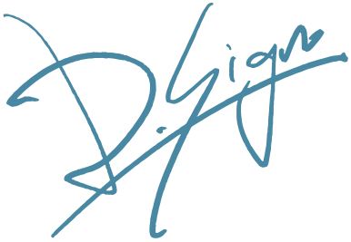

TORSO No.0012026 90 × 50.38 cm
ステートメントStatement创作自述
Images about looking and the trouble with wanting.
見ることと、欲しがることの厄介さについて。
关于观看，以及“想要”的麻烦。
TORSO は、トルソーを置いた絵のシリーズだ。トルソーは、服を着せて見せるための、頭のない体。一枚の絵は、AIで作った一枚の画像から始まり、何度もその画像に戻ってくる。画像から結晶の面のような角ばったかけらを作り、元の画像に重ねる。そこに絵具のシミュレーションで水を引き、画面を傾けて、絵具を流す。結晶のかけらは動かない。流れた絵具は、思いどおりにはならない。流れたあとを見て、どこを残すかを決め、また元の画像に重ねる。トルソーは、その中に立っている。
結晶と流れは、どちらも中学生のころから自分の中にある。そのころ、鉱山で水晶やトパーズの原石を掘り、遠藤周作の『深い河』に影響を受けた。
トルソーは、ジャンポール・ゴルチエから来ている。ゴルチエのクリエイション（服やショー）を見て、自分が本当に作る側の人間だと知った。二十歳で着るようになると、ゴルチエを取り扱う正規店にまるで飲み屋に通うように足を運び、店長や店員と衣服の談議に花を咲かせた。そこにはいつも、欲しい服を着たトルソーが立っていた。いま、トルソーは「ただそこに在るもの」、実に個人的な意味における「動かない実在」のようなものだ。
思いどおりにならないものを見て、何を残すかを決める。2021年からは、UVプリンターを筆にして、本物の帯や着物や和紙に「絵画」を刷り、印刷に立ち会って、刷り損じがミスか味かをその場で決めた。見る人は、それを絵画として見た。形にしたくて、刷ってきた。けれど、刷って「できた」と思った次には、「できてなんかいない」と思う。
いまの作品の実体はデータで、原寸は制作中に見ている画面の実寸だ（No.001 は 90 × 50.38 cm）。離れて見ればトルソーの立つ部屋が見え、近づくと全体は分からなくなって、結晶のかけらと流れた絵具が見えてくる。紙に刷っても、それは変わらない。基本的に刷らない。欲しい人がいれば、部数を限って和紙に刷り、筆で署名を入れる。
見えていると思っているものを、本当に見ているのか。
TORSO is a series of pictures, each with a torso placed in it. A torso is a headless body for putting clothes on and showing them. Each picture begins with a single image made with AI, and returns to that image again and again. From the image I make angular fragments, like the faces of a crystal, and lay them over the original image. Over this, in a paint simulation, I lay down water, tilt the picture, and let the paint flow. The crystal fragments do not move. The paint that flows will not go as I intend. I look at what the flow has left, decide what to keep, and lay it over the original image again. The torso stands in the midst of it.
Crystal and flow have both lived in me since my early teens. In those years I dug for rock crystal and topaz at mines, and I was influenced by Shusaku Endo’s novel Deep River.
The torso comes from Jean Paul Gaultier. Seeing his creations — the clothes and the shows — I knew I was truly one of those who make. When I started wearing Gaultier at twenty, I kept going to an authorized Gaultier shop the way a regular goes to a bar, and had long, lively talks about clothes with the manager and staff. There was always a torso standing there, wearing the clothes I wanted. Now the torso is “something simply there” — in a truly personal sense, something like “a motionless presence.”
I look at what will not go as I intend, and decide what to keep. From 2021 on, using a UV printer as my brush, I printed “paintings” onto real obi, kimono and washi, stood beside the printer, and decided on the spot whether each misprint was a mistake or character. Viewers saw them as paintings. I wanted to give the image form, so I kept printing. But each time I print and think, “It’s done,” the next moment I think, “It isn’t done at all.”
My work now exists as data, and its full size is the actual size of the screen I look at while I work (No.001 is 90 × 50.38 cm). From a distance you see the room where the torso stands; come closer and you can no longer make out the whole, and the crystal fragments and the paint that flowed come into view. Printing it on paper does not change that. As a rule, I do not print. If someone wants one, I print a limited edition on washi and sign it with a brush.
Are we really looking at what we think we see?
TORSO，是在画中放置人台（torso）的系列作品。人台，是为了穿上衣服给人看的、没有头的身体。每一幅画，都从一张用AI做出的图像开始，又一次次回到那张图像。我从图像中做出像结晶的面一样棱角分明的碎片，叠在原来的图像上。再用颜料模拟在上面铺水，倾斜画面，让颜料流动。结晶的碎片不会动。流下的颜料，不会如我所愿。看着流过的痕迹，决定留下哪里，再叠回原来的图像上。人台，就立在其中。
结晶与流动，都是从初中起就存在于我心中的东西。那时，我在矿山挖水晶和黄玉的原石，也受到了远藤周作《深河》的影响。
人台，来自让·保罗·高缇耶（Jean Paul Gaultier）。看到高缇耶的创作（服装与时装秀），我才知道自己真正属于创造的那一方。二十岁开始穿高缇耶之后，我就像常去小酒馆一样，往经营高缇耶的正规店里跑，和店长、店员聊衣服，聊得兴致勃勃。那里总立着一个人台，穿着我想要的衣服。如今，人台是“只是在那里的东西”，在极其个人的意义上，像是一种“不动的实在”。
我看着不会如我所愿的东西，决定留下什么。从2021年起，我把UV打印机当作笔，在真正的腰带、和服与和纸上印“绘画”，守在印刷现场，当场判断每一处印坏的地方是失误还是韵味。看的人，把它们当作绘画来看。我想让它成形，所以一路印了过来。可是，印出来觉得“成了”的下一刻，又会觉得“根本没成”。
如今，作品的实体是数据，原尺寸就是我创作时所看屏幕的实际尺寸（No.001 为 90 × 50.38 cm）。远看，能看到人台所立的房间；走近，就看不清整体了，结晶的碎片与流下的颜料渐渐显现。即使印在纸上，这一点也不会改变。原则上我不印。如果有人想要，我会限量印在和纸上，并用画笔签名。
以为自己看见的东西，我们真的在看吗？

続けて読むRead on继续阅读
- はじまりBeginnings缘起なぜ「見る」なのかWhy looking为什么是“看”
- 記録Record记录1995年からSince 19951995年起
作品Works作品
いまのシリーズCurrent series现在的系列
TORSO2026–トルソーは、服を着せて見せるための、頭のない体。ゴルチエの店には、いつもトルソーがあった。欲望の対象だったものが、いまはただそこに在る。TORSO は、その動かない実在を絵の中に置いていく。
A torso is a headless body for putting clothes on and showing them. In the Gaultier shop there was always a torso. Once an object of desire, it is now simply there. TORSO goes on placing that motionless presence in pictures.
人台，是为了穿上衣服给人看的、没有头的身体。高缇耶的店里，总立着一个人台。曾经是欲望的对象，如今只是在那里。TORSO，把这种不动的实在，一幅一幅地放进画里。
これまでEarlier此前